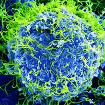
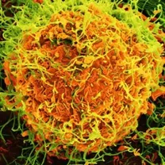
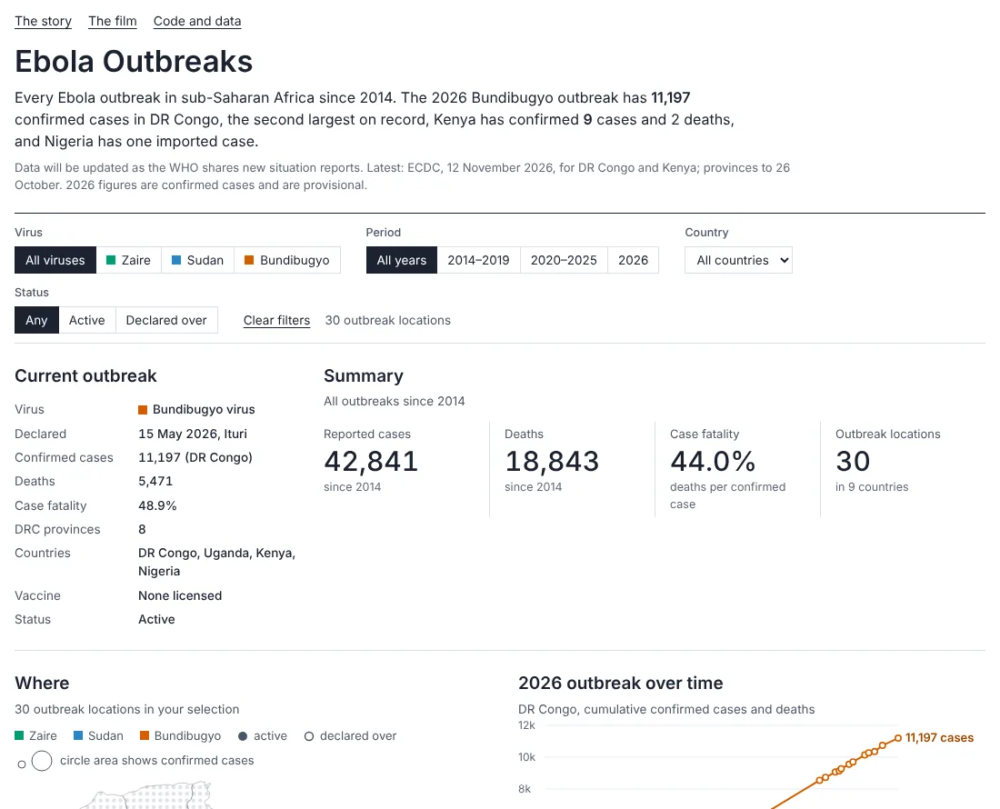

This data tracks the spread of Ebola across the African continent from Sierra Leone to Nairobi over a 12-year period. The map visualizes outbreaks place by place. Active outbreaks are marked by rising spikes that correspond to confirmed cases of the Zaire, Sudan, and Bundibugyo strains. Spikes turn grey when an outbreak is officially declared over.
Zaire ebolavirusSudan virusBundibugyo virus
2014

The largest Ebola epidemic on record reached Sierra Leone in 2014. Driven by the Zaire ebolavirus, the country recorded 14,124 cases and 3,956 deaths. This marked the highest toll of any single nation during the crisis.
Zaire ebolavirus
2014 to 2016
The epidemic originated near Guéckédou, Guinea, and rapidly escalated into a national crisis across three neighboring countries. The data visualizes the national totals rather than provincial numbers. Guinea reported 3,814 cases and Liberia reported 10,678 cases. Combined with Sierra Leone, the regional outbreak resulted in a total of 28,616 cases and 11,310 deaths.
2016
The World Health Organization declared the final flare-up over in Sierra Leone on March 17, 2016. Guinea followed on June 1, and Liberia on June 9, at which point the map spikes turn grey.
Health officials declare an outbreak over only after 42 consecutive days pass with no new cases. However, the virus is never fully eradicated because it remains endemic in animal populations.
2018 · Democratic Republic of the Congo
Four years after the West African epidemic, the virus resurfaced in August 2018. This new outbreak emerged in the far eastern region of the Democratic Republic of the Congo, a vast nation divided into 26 provinces.
2018 to 2020
The Zaire ebolavirus spread across North Kivu, Ituri, and South Kivu provinces. Operating within an active conflict zone, health workers recorded 3,470 cases and 2,287 deaths. The outbreak was officially declared over on June 25, 2020.
Zaire ebolavirus
2022 and 2025
Uganda faced outbreaks of the Sudan virus, a strain for which there is currently no licensed vaccine. In 2022, the virus caused 164 cases in the Mubende District, with the outbreak declared over on January 11, 2023. A subsequent outbreak in Kampala caused 14 cases in 2025 and was declared over on April 26, 2025.
Sudan virus
2025
A separate spillover event of the Zaire ebolavirus occurred in the Kasaï Province, distant from the eastern outbreaks. Centered around Bulape, this outbreak resulted in 64 cases and 45 deaths before being declared over in December 2025.
Zaire ebolavirus
May 2026

On May 15, 2026, health officials in DR Congo confirmed an outbreak of the Bundibugyo virus in Ituri Province. Epidemiological data suggests the virus had been circulating undetected for several weeks. There is currently no approved vaccine for the Bundibugyo strain.
Bundibugyo virus
August 2026
By August 12, the Bundibugyo outbreak reached 4,665 confirmed cases, with 85 percent concentrated in Ituri. In approximately eleven weeks, the case count surpassed the total number of infections from the entire 2018 to 2020 epidemic, making it the second-largest Ebola outbreak on record.
October 2026
By October 14, the DR Congo outbreak expanded to seven provinces, totaling 9,277 cases. The distribution included 6,806 cases in Ituri, 1,991 in North Kivu, 398 in Haut-Uélé, 64 in Tshopo, 13 in Bas-Uélé, three in South Kivu, and two in Sud-Ubangi.
The fatality rate remained at nearly 50 percent of all confirmed cases.
2026
Uganda recorded 20 confirmed cases of the Bundibugyo virus linked to the outbreak in neighboring DR Congo. Health authorities contained the spread and officially declared the Ugandan outbreak over in August 2026.
Bundibugyo virus
October 2026
On October 3, a Kenyan national flew from Entebbe, Uganda, to Nairobi. The patient’s travel history included transit from Buta in Bas-Uélé through Kisangani and Beni in DR Congo, before crossing the Ugandan border at Mpondwe. The patient died on October 5.
By October 16, Kenyan health officials confirmed three cases of the Bundibugyo virus, all directly linked to this initial patient.
Bundibugyo virus
Late October 2026
Kenya’s count rose to nine confirmed cases, all in one cluster linked to the first patient, including three health workers who treated him. On October 23, the Ministry of Health reported a second death, a 65-year-old woman who was a close relative of the first patient. WHO’s report of the same day lists the same nine cases.
On October 20, Nigeria confirmed an imported case in Abuja, a woman who had travelled from Uganda; she was later evacuated to Switzerland for care.
In DR Congo, the outbreak passed 10,000 confirmed cases. By October 31, the Ministry of Health counted 10,351 cases and 5,026 deaths, across eight provinces after Nord-Ubangi recorded its first cases.
Bundibugyo virus
2014 to 2026
Viewing the continent as a whole shows a clear eastward progression of active outbreaks. While the West African and Ugandan epidemics are resolved, the eastern DR Congo outbreak remains active, with a direct transmission link to Nairobi.
A dotted line connects each outbreak geographically in chronological order, from Guéckédou in 2014 to Nairobi in 2026. Most map points represent separate zoonotic transmission events from animals to humans; however, the 2026 path to Nairobi represents a single, continuous chain of human infection.
At this map scale, spike heights are calculated using the square root of total cases.
Africa at night
NASA’s Black Marble satellite imagery illuminates Africa’s active urban centers and transportation networks at night. These connected transit routes facilitated the movement of the virus from eastern DR Congo to Nairobi in two days.
Behind the data, every spike on the map represents an impacted community.
Explore the data
The dashboard has every outbreak location on this map, with its virus, status, cases, deaths and source. Filter by virus, period, country or status, and follow the 2026 outbreak day by day. It is updated as WHO shares new reports.
Open the dashboard
A 3D spike map built in the browser with three.js. The ground is a cloud-free 2024 Sentinel-2 satellite mosaic in natural colour, sharpened over West Africa, eastern DR Congo, Kasaï and East Africa, and shaded with relief from an open elevation model. The whole-continent views use NASA’s Blue Marble and Black Marble.
Each spike’s height is proportional to confirmed cases on one scale; in the whole-continent views spikes switch to a square-root scale so small outbreaks stay visible. West African spikes are national totals, one per country. 2026 spikes are province totals, placed on each province’s main town; between reporting dates the curve, and each province’s share of it, is interpolated.
2026 figures are confirmed cases and are provisional. Earlier outbreaks show final totals, which for 2014–16, 2018–20 and 2022 include probable cases. Linked 2026 cases were also confirmed in France and Nigeria. Virus images are coloured electron micrographs of Ebola virus particles by NIAID, from Unsplash and Wikimedia Commons. The three ebolaviruses look alike under the microscope, so each image is matched to its virus by colour; none is a strain-specific photograph. Ebola is never eradicated, because the virus survives in animals; WHO declares an outbreak over after 42 days with no new cases.
Updated October 31, 2026.